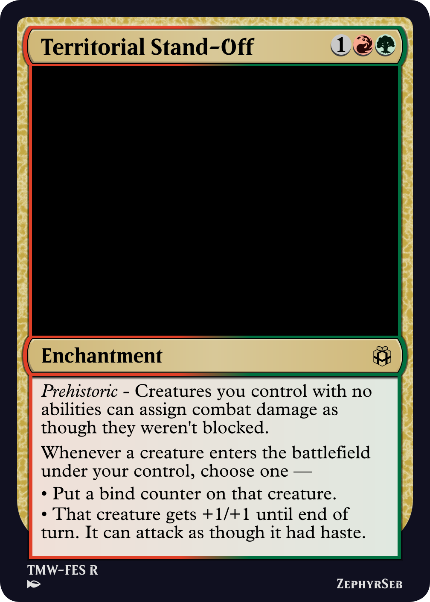
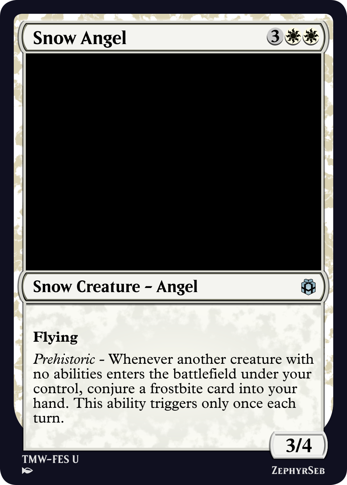
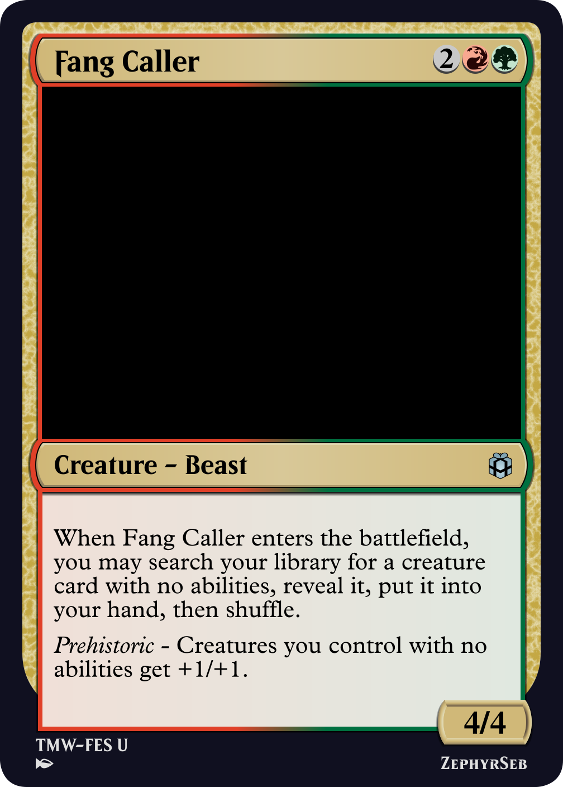
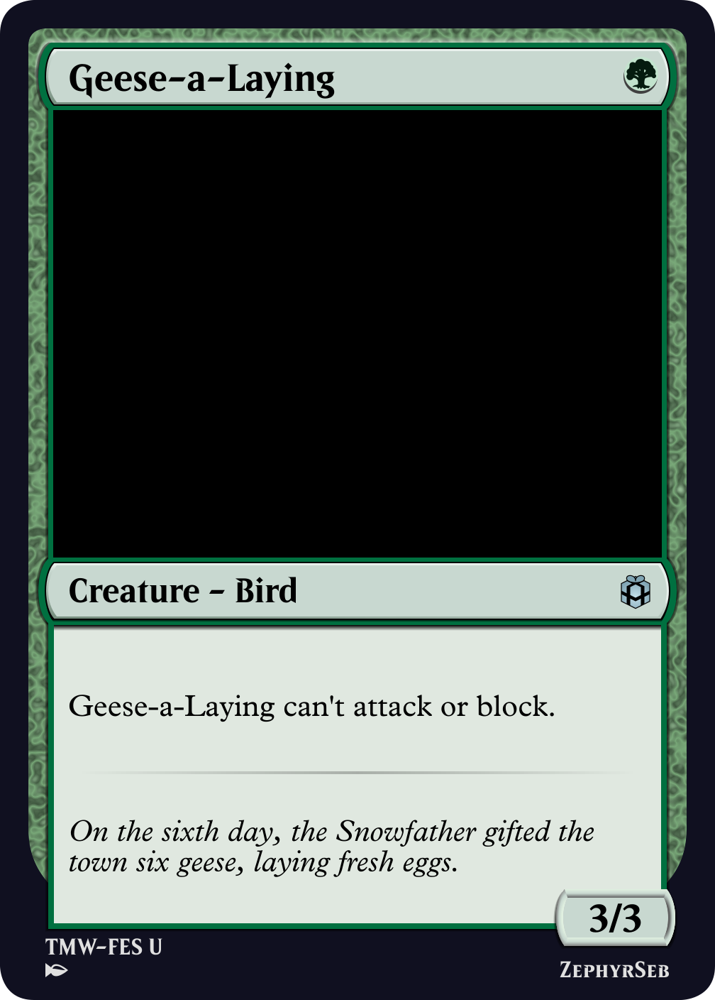
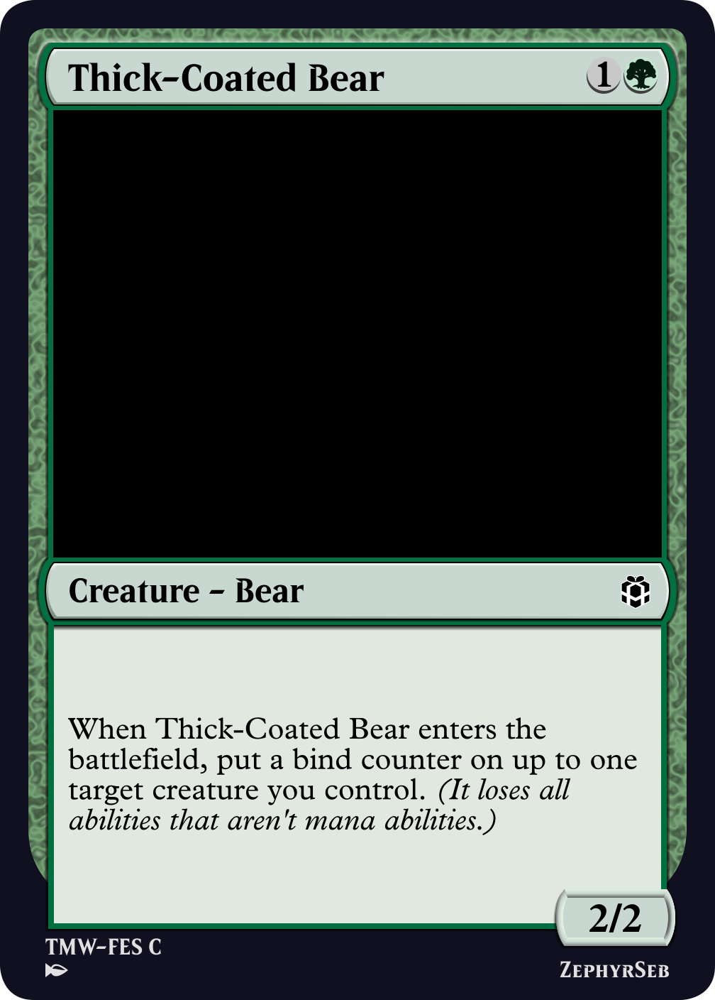
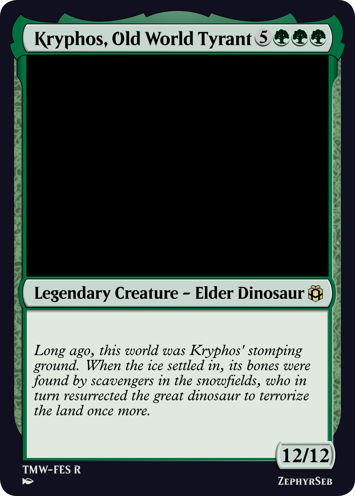

Savannah Lions
Creatures with no abilities, commonly referred to as vanilla creatures, have appeared since the very beginning of Magic. They are simple, defined solely by their power and toughness.
In the Magic multiverse, Muraganda, as a plane, has exhibited a few cards that care about vanilla creatures mechanically. Though these cards are few and far between. This raises the question, what can we do to expand on this area of design?

Muraganda Petroglyphs
Keeping with the theme, in Festiville, I introduced an ability word, prehistoric, that cares about creatures with no abilities. In the set, this tends to be themed around fossils and dinosaurs, however many tokens created not just in this set, but also in many others, have no abilities, allowing for a good variety of cards that work with this theme. The set also introduces bind counters, which are a new design tool I hope to use in the future; a bind counter put on a permanent removes all abilities from the permanent other than mana abilities.
In this article, I'm going to share some cards from the Festiville set and talk about their designs.

Territorial Stand-Off
When creating typal themes, it's easy to have effects such as '[TYPE] creatures you control have trample'. However, if you give a vanilla creature a keyword, it ceases to be vanilla. With that in mind, we have to be very careful with our wording. We can't say 'Creatures with no abilities have trample' or 'Creatures you control with no abilities have "This creature assigns excess combat damage to a player it's attacking."', as both of these confer abilities. We can, however, directly state 'Creatures you control with no abilities assign excess combat damage to a player it's attacking.', as this isn't an ability of the vanilla creature.
That being said, simply unkeywording trample isn't the most inspired move. The major downside of vanilla creatures is that they tend to be a little weaker than creatures with abilities, so compared to typal design, we can increase the pay-off for using vanilla creatures. The first effect of Territorial Stand-Off is sometimes referred to as 'Super Trample', due to it being a similar, albeit stronger variant or trample.

Snow Angel
Due to the way the color pie works, oftentimes each set has a card that works on a variation of the same theme within the set's mechanical structure. A common theme in white is a creature that can draw cards from small creatures entering the battlefield. In many cases, this is triggered by getting a creature token, usually a 1/1 human or soldier, to enter. In these cases, that token is a vanilla creature. This leads us to Snow Angel's effect, which, in white, would usually trigger from a small token creature entering, however, it can fall into archetypes that wouldn't normally be able to use this type of effect, such as using this with 3/3 vanilla tokens, like dinosaurs or nephri.

Fang Caller
A key point with prehistoric cards is that the creature with prehistoric cannot be a vanilla creature. This is usually referred to as an A-B mechanic. But there are a number of ways to get around this, which, while we may not want to do too much in a set, can be useful for specific cards like signpost cards, as they can help lead a draft deck in a specific direction. Fang Caller, for example, tutors a vanilla creature from your deck, which when played, will even be buffed by Fang Caller's second ability.


Geese-a-Laying and Thick-Coated Bear
As mentioned above, the set also uses bind counters as a soft removal. A permanent with a bind counter on it loses all abilities except mana abilities; this includes abilities conferred from auras, equipment, other permanents, and keyword counters. While normally a negative effect, if you have a powerful creature with a downside, such as Geese-a-Laying, putting a bind counter on this is only an upside. In particular, being able to curve into Thick-Coated Bear in an aggro deck can lead to an early lead.

Kryphos, Old World Tyrant
Lastly, for those who want to build around the idea in commander, it was important to put the effect on some legendary creatures. While there are more traditional commanders who support vanilla-matters gameplay, there is something very appealing about having a big creature in the command zone with stats far higher than its mana cost would normally allow.
That's it from me, may you get yourself out of a bind.
ZephyrSeb